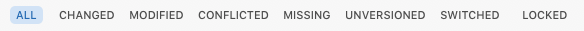

The filter bar allows you to quickly apply commonly-used filters to the contents of the browser. You can also filter the contents of the browser by name, author or revision.

Shows all the files in the browser.
The browser’s pre-filtered expansion status is restored. Use the Show File in All function on the browser’s right-click menu to remove the filter and reveal the current selection.
Clicking the All button does not reset the text in the filter’s search field. Use the View > Show All (key equivalent ⌘\) function to do this.
Shows only files in the working copy which have changed since the last commit or update. This includes all added, conflicted, deleted, missing, modified, obstructed, replaced and unversioned files.
External and ignored files are not shown.
Shows only files which have been modified, including items with both content and property modifications.
Shows only conflicted files in the working copy.
Shows only files which are under version control but are not present in the working copy.
Shows only unversioned files in the working copy.
Shows only switched files in the working copy.
Shows only files in the working which are locked. This filter can be combined with Changed, Modified, Conflicted, Unversioned and Newer in Repository.
Shows all files in the working copy for which the HEAD revision in the repository is higher than the BASE revision in the working copy, i.e. which have been modified in the repository since being last updated or committed in the working copy.
Use this filter to gain a quick overview of changes which will be pulled to the working copy when updating. Items marked as modified both in the working copy and repository are possible candidates for merge conflicts. Care should therefore be exercised before updating these items.
This filter is only available when View > Show Repository Status is enabled.
The search text box can be used to search for matching file (or folder) names as well as authors and revisions in the items that match the current filter.
The search field’s text is reset by View > Show All (key equivalent ⌘\).
The search field automatically applies the filter a short period after the last keystroke. Pressing the Return ⏎ key while in the search field will result in the filter text being stored for quick access from the field’s drop-down menu.